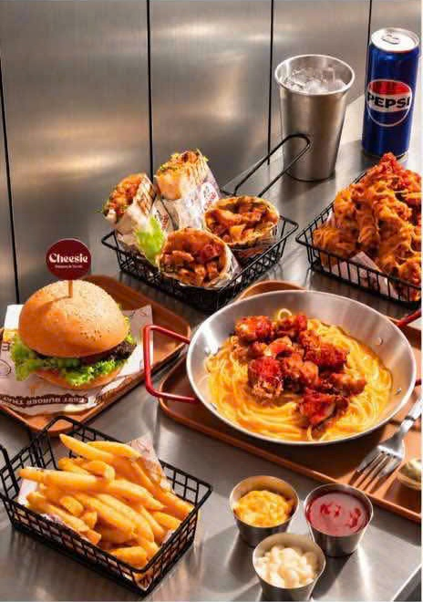
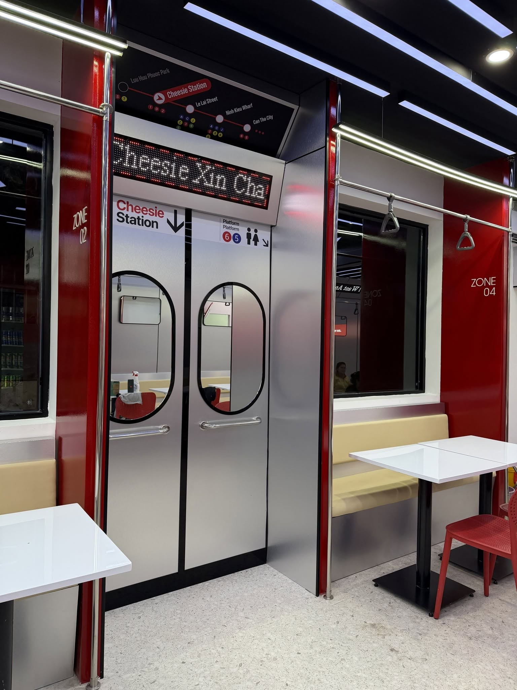

GA CHEESIE / TRẠM ĐỒ NGON
Đói rồi?
Cuốn thôi.
Tacos đầy nhân, burger đẫm vị, gà giòn rụm.
Ghé Cheesie, chọn một món ngon — hay tự tạo
chiếc tacos đúng gu của bạn.
01 CHỌN SIZE02 THẢ NHÂN03 THÊM SỐT
01 CHEESIE STATION ↗

TOA ĐỒ NGONFRENCH TACOS & BURGERS
CUỐN THEO
GU BẠN★ CHEESIE ★
ẢNH TỪ MENU NHÀ CHEESIEGU BẠN★ CHEESIE ★
CHEESIE
PLATFORM 02 / TACOS EXPRESS
Chiếc tacos này,
bạn làm chủ.
Chọn size. Kéo nhân vào bánh. Thêm sốt.
Phần ngon nhất? Mọi lựa chọn đều là của bạn.
TACOS EXPRESSCHEESIE STATION → YOUR HAPPY PLACE
SIZE / TOA BÁNHM
TRẠM TIẾP THEOCHỌN NHÂN
01 / CHỌN SIZE
CHEESIE / MAKE IT YOURS
BẮT ĐẦU VỚI MỘT CHIẾC BÁNH
KÉO THẢ HOẶC BẤM +
CHIẾC TACOS CỦA BẠNĐANG CHỌN
Tổng chiếc tacos
Mỗi loại nhân và sốt được chọn một lần. Giá và số phần theo menu Cheesie. Topping thêm tính riêng.

CHEESIE STATION — NEXT STOP: GOOD FOOD.PLATFORM 03 / CHEESIE STATION
Trạm dừng
của những
chiếc bụng đói.
Một cuộc hẹn với bạn thân, một bữa tối đổi gió,
hay đơn giản là hôm nay thèm chút phô mai.
Cheesie đợi bạn ghé.
102 Lê Lai, Ninh Kiều, Cần Thơ
9:30–22:30 · 078 878 6283
Hẹn bạn ở
Cheesie.
Facebook · ShopeeFood · GrabFood